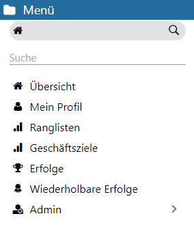
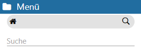
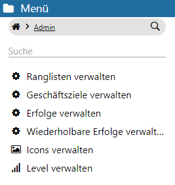

Über die einzelnen Menüpunkte können folgende Bereiche im SMART SCORE erreicht werden:
ü Hauptübersicht
Es werden Art
und Anzahl der Meso-Coins und Edelsteine, sowie definierte Ranglisten,
Geschäftsziele, Erfolge (in Kategorien) und wiederholbare Erfolge angezeigt.
ü Mein Profil
Zeigt das Profil des angemeldeten Benutzers. Es können
Informationen über Gruppen- und Levelzugehörigkeit, erwirtschaftete Meso-Coins
und Edelsteine abgerufen werden. Zudem werden zusammenfassend Angaben über die
Teilnahme an aktiven Ranglisten, Geschäftszielen, Kategorien (und damit
verbundener einmaliger Erfolge) und wiederholbaren Erfolgen gemacht. Einzelne
SMART SCORE Elemente sind darüber hinaus selektierbar, sodass
detaillierte Informationen und Abhängigkeiten in Erfahrung gebracht werden
können.
ü Ranglisten
Es sind die Ranglisten zu sehen, an denen der
eingeloggte Benutzer teilnimmt. Es werden ausschließlich Ranglisten angezeigt,
welche über den Menüpunkt "Admin" aktiv gestellt worden sind.
ü Geschäftsziele
Zeigt
alle definierten Geschäftsziele, an denen der angemeldete WinLine Benutzer
beteiligt ist.
Auch bei den Geschäftszielen bedarf es einer Aktivierung (vgl.
o. a. "Ranglisten"), sodass diese in der Übersicht erscheinen.
ü Erfolge
Es sind alle einmaligen Erfolge zu sehen, an denen der
eingeloggte Benutzer teilnimmt.
ü Wiederholbare
Erfolge
Hier sind alle wiederholbaren
Erfolge zu sehen, an denen der eingeloggte Benutzer teilnimmt.
ü Admin (nur für
(Teil-)Administratoren)
Durch das Öffnen
dieses Menüpunktes wird der Administrationsbereich erreicht. Dort werden die
Parameter für Ranglisten, Geschäftsziele und (wiederholbare) Erfolge gesetzt.
Zusätzlich können Icons für die Kennzeichnung und Darstellung von Ranglisten und
(einmaligen) Erfolgen, sowie die Levelstruktur verwaltet werden.
Hinweis
Dieser Bereich ist Volladministratoren und den WinLine Benutzern vorbehalten, die im WinLine Admin-Programm notwendige Berechtigungen für WinLine SMART SCORE gesetzt haben.
Menü-Kopf
Im Kopf des Menüs befindet sich ein Suchfeld, welches durch das Selektieren des Lupen-Icons geöffnet werden kann. Durch Eingabe innerhalb des Suchfeldes können die darunter aufgeführten Menüpunkte über die Autovervollständigung eingegrenzt werden.
Das Eingabefeld kann durch erneutes Klicken (auf das Lupen-Icon) wieder geschlossen werden.
Hinweis
Durch das Selektieren des Haus-Icons kann aus einer tieferen Menüebene heraus wieder diese (obere) Ebene erreicht werden.

Menüpunkt "Admin" (für WinLine SMART SCORE- und Hauptadministratoren)

Im Administrationsbereich können Einstellungen für Ranglisten, Geschäftsziele, (wiederholbare) Erfolge und die Verwaltung von Icons und Levels vorgenommen werden. Dieser Bereich ist Volladministratoren und den WinLine Benutzern vorbehalten, die im WinLine Admin-Programm Berechtigungen für WinLine SMART SCORE gesetzt haben.
ü Ranglisten verwalten
Es
werden in einer Übersicht sämtliche vorhandene aktive Ranglisten eingeblendet.
Diese können bearbeitet, bzw. neu angelegt werden.
ü Geschäftsziele
verwalten
Beim Klick auf diesen Admin-Menüpunkt wird eine Übersicht
über sämtliche vorhandene aktive Ranglisten eingeblendet. Die Ranglisten können
bearbeitet, bzw. neu angelegt werden.
ü Erfolge verwalten
Bietet
eine Übersicht vorhandener Erfolge. Diese können bearbeitet, bzw. neu angelegt
werden.
ü Wiederholbare Erfolge
verwalten
Ermöglicht das Bearbeiten und Erstellen wiederholbarer
Erfolge.
ü Icons verwalten
Es
können SMART SCORE-Icons verwaltet werden.
ü Level verwalten
Es kann
eine Level-Struktur für die Teilnehmer eingerichtet werden.
Hinweis
Alle WinLine SMART SCORE Definitionen sind mandantenspezifisch verwaltet. Eine separate Rangliste ist beispielsweise für jeden Mandanten anzulegen, in welchem die Benutzer teilnehmen sollen.